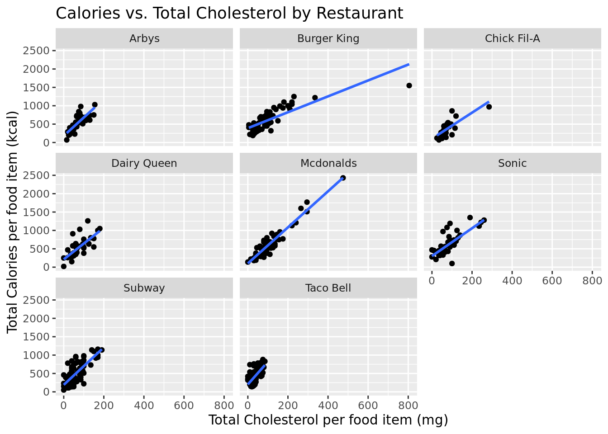
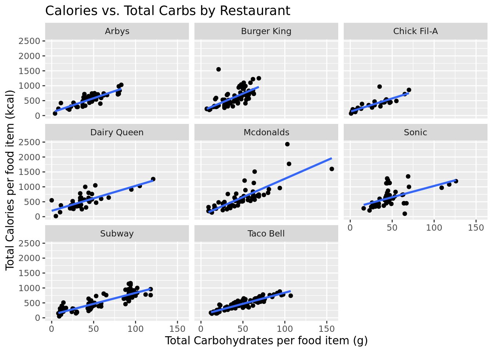

Stat Legends Investigate Fast Food
Report
INTRODUCTION AND DATA
<<<<<<< HEADThe data we are utilizing focuses on the nutrition facts of different fast food items across 8 restaurants. It was not from a specific study consisting of samples and observations, but was curated on September 4th, 2018 by technologists and statisticians from the fast food nutrition organization, which aims to provide consumers with insight into their fast food options from various restaurants. To make our research question more specific, we are using a data set that only consists of entrees from eight different restaurants, with specific quantitative variables such as calories, total carbohydrates, and cholesterol listed for every entree at these restaurants.
Consistent fast food consumption, which normally consists of poor diets with elevated calories and limited nutrients, has been found to pose a significant risk for weight gain, diabetes, cardiovascular disease, and the list goes on. With this staggering prevalence of similar diets and illnesses (specifically in the United States, where over 36.2% of the population is obese), we thought it would be interesting and useful to analyse a data set from a dietary perspective. Therefore, we set out to investigate whether total carbohydrate content or cholesterol level is a better predictor of the amount of calories in food items at eight different fast-food restaurants. We hypothesize that there will be a direct, positive, linear relationship between calories and cholesterol level and total carbohydrate content in fast food entree items, and that these models will interact because foods high in carbohydrates generally also have high cholesterol levels. Between cholesterol and carbohydrates, we predict that carbohydrates will be a better predictor of calories in fast food (1). This research question is valuable for individuals because information on the relationship between the number of calories and less healthy nutrients (carbohydrates and cholesterol) can help guide dietary restrictions at the consumer level to prevent the incidence of these types of unhealthy living conditions.
LITERATURE REVIEW
The correlation between fast food consumption and subsequent health outcomes (including those like obesity and related heart conditions) is an urgent issue in the United States. It has been found that a fast food consumption poses a significant risk for poor diets featuring elevated calories and fats and limited nutrients. This mix of poor nutrition and high caloric level can lead to weight gain, diabetes, and cardiovascular disease, among other health concerns. This specific article looks at a comprehensive view of American nutritional and caloric intake from fast food restaurants and how that relates to the individual’s weight. The article talks about the high caloric content of many fast food restaurants and how many of them provide poor nutrition and high fat and sodium content (1). The findings of this article reinforce the need to analyze fast food consumption and its impact on the prevalence of these health outcomes across the country.
Our research question responds to the findings of this article by posing a deeper analysis of these trends based on specific fast food chains. While the literature article takes a wide lens view of nutritional value of fast food items, our research looks at specific correlations to help guide food choices. The results from our research question can be used to guide dietary recommendations to promote a healthier diet and decrease the risk of these negative health outcomes.
METHODOLOGY
First, we will re-level the cholesterol variable to create a qualitative variable that reveals whether the cholesterol is above or below recommended levels (200mg if you are at risk of heart disease and 300mg if you are healthy) (2). We chose our threshold for high cholesterol as 100 mg or above because half of the daily intake of cholesterol in one meal is more than you need, if you are averaging 3 meals per day.
We will then create a simple linear regression for both cholesterol and carbohydrates’ relationship with calories, and an interactive and additive linear regression model consisting of how the new cholesterol variable and total carbohydrate content effect each other to predict calories for each entree from a specific restaurant. There will be two graphs, each facet-wrapped by restaurant to make sure it is not a confounding variable and simplify our graphs. Creating these models will allow us to make inferences from our data (we cannot make predictions, as our research question does not involve future occurrences), which will help us answer our research question regarding the effect of cholesterol levels and total carbohydrates on the number of calories.
The data we are utilizing focuses on the nutrition facts of different fast food items across 8 restaurants. It was not from a specific study consisting of samples and observations, but was curated on September 4th, 2018 by technologists and statisticians from the fast food nutrition organization, which aims to provide consumers with insight into their fast food options from various restaurants. To make our research question more specific, we are using a dataset that only consists of entrees from 8 different restaurants, with specific quantitative variables such as calories, total carbohydrates, and cholesterol listed for every entree at these restaurants.
Consistent fast food consumption, which normally consists of poor diets with elevated calories and limited nutrients, has been found to pose a significant risk for weight gain, diabetes, cardiovascular disease, and the list goes on. With this staggering prevalence of similar diets and illnesses (specifically in the United States, where over 41.9% of the population is obese), we thought it would be interesting and useful to analyze a data set from a dietary perspective (1). Therefore, we set out to investigate whether total carbohydrate content or cholesterol level is a better predictor of the amount of calories in food items at 8 different fast-food restaurants. We hypothesize that there will be a direct, positive, linear relationship between calories and cholesterol level and total carbohydrate content in fast food entree items, and that these models will interact because foods high in carbohydrates generally also have high cholesterol levels. Between cholesterol and carbohydrates, we predict that carbohydrates will be a better predictor of calories in fast food (2). This research question is valuable for individuals because information on the relationship between the number of calories and less healthy nutrients (carbohydrates and cholesterol) can help guide dietary restrictions at the consumer level to prevent the incidence of these types of unhealthy living conditions.
LITERATURE REVIEW
The correlation between fast food consumption and subsequent health outcomes (including those like obesity and related heart conditions) is an urgent issue in the United States. It has been found that fast food consumption poses a significant risk for poor diets featuring elevated calories and fats and limited nutrients. This mix of poor nutrition and high caloric level can lead to weight gain, diabetes, and cardiovascular disease, among other health concerns. This specific article looks at a comprehensive view of American nutritional and caloric intake from fast food restaurants and how that relates to the individual’s weight. The article talks about the high caloric content of many fast food restaurants and how many of them provide poor nutrition and high fat and sodium content (2). The findings of this article reinforce the need to analyze fast food consumption and its impact on the prevalence of these health outcomes across the country.
Our research question responds to the findings of this article because while the literature article takes a wide lens view of nutritional value of fast food items, our research looks at specific correlations to help guide food choices. The results from our research question can be used to guide dietary recommendations to promote a healthier diet and decrease the risk of these negative health outcomes.
METHODOLOGY
First, we will re-level the cholesterol variable to create a qualitative variable that reveals whether cholesterol is above or below recommended levels (200mg if you are at risk of heart disease and 300mg if you are healthy) (3). We chose our threshold for high cholesterol as 100 mg or above because half of the daily intake of cholesterol in one meal is more than you need, if you are averaging 3 meals per day.
We will then create simple linear regressions for both cholesterol and carbohydrates’ relationship with calories, and both interactive and additive linear regression models consisting of how the new cholesterol variable and total carbohydrate content affect each other to predict calories for each entree from a specific restaurant. There will be two graphs, each facet-wrapped by restaurant to make sure it is not a confounding variable. Creating these models will allow us to make inferences from our data (we cannot make predictions, as our research question does not involve future occurrences), which will help us answer our research question regarding the effect of cholesterol levels and total carbohydrates on the number of calories.
#relevel the cholesterol variable
fastfood_calories <- fastfood_calories |>
mutate(new_cholesterol = if_else(cholesterol >= 100, "High", "Low"))
#relationship between calories and cholesterol
cal_chol_model <- linear_reg() |>
set_engine("lm") |>
fit(calories ~ new_cholesterol, data = fastfood_calories)
tidy(cal_chol_model)# A tibble: 2 × 5
term estimate std.error statistic p.value
<chr> <dbl> <dbl> <dbl> <dbl>
1 (Intercept) 836. 21.9 38.1 7.70e-152
2 new_cholesterolLow -390. 24.8 -15.7 7.39e- 46
fastfood_calories |>
ggplot(aes(y = calories, x = cholesterol)) +
geom_point() +
geom_smooth(method = "lm", se = FALSE) +
facet_wrap(~restaurant) +
labs(title = "Calories vs. Total Cholesterol by Restaurant",
x = "Total Cholesterol per food item (mg)",
y = "Total Calories per food item (kcal)")#relationship between calories and total carb
cal_carb_model <- linear_reg() |>
set_engine("lm") |>
fit(calories ~ total_carb, data = fastfood_calories)
tidy(cal_carb_model)# A tibble: 2 × 5
term estimate std.error statistic p.value
<chr> <dbl> <dbl> <dbl> <dbl>
1 (Intercept) 162. 18.3 8.84 1.57e-17
2 total_carb 8.09 0.352 23.0 4.96e-81
fastfood_calories |>
ggplot(aes(y = calories, x = total_carb)) +
geom_point() +
geom_smooth(method = "lm", se = FALSE) +
facet_wrap(~restaurant) +
labs(title = "Calories vs. Total Carbs by Restaurant",
x = "Total Carbohydrates per food item (g)",
y = "Total Calories per food item (kcal)")#additive model
additive_model <- linear_reg() |>
set_engine("lm") |>
fit(calories ~ new_cholesterol + total_carb, data = fastfood_calories)
tidy(additive_model)# A tibble: 3 × 5
term estimate std.error statistic p.value
<chr> <dbl> <dbl> <dbl> <dbl>
1 (Intercept) 447. 21.1 21.2 4.56e-72
2 new_cholesterolLow -308. 16.8 -18.3 4.56e-58
3 total_carb 7.10 0.279 25.5 3.76e-93#interactive model
int_model <- linear_reg() |>
set_engine("lm") |>
fit(calories ~ new_cholesterol*total_carb, data = fastfood_calories)
tidy(int_model)# A tibble: 4 × 5
term estimate std.error statistic p.value
<chr> <dbl> <dbl> <dbl> <dbl>
1 (Intercept) 461. 33.8 13.6 2.85e-36
2 new_cholesterolLow -325. 37.4 -8.70 4.75e-17
3 total_carb 6.85 0.558 12.3 1.35e-30
4 new_cholesterolLow:total_carb 0.333 0.644 0.517 6.05e- 1[1] 7076.215[1] 6914.045[1] 6656.239[1] 6657.969glance(cal_chol_model)$AIC[1] 7076.215[1] 6914.045[1] 6656.239[1] 6657.969glance(additive_model)$r.squared[1] 0.7028852RESULTS
<<<<<<< HEADAfter producing the linear regressions and plots, we found a direct, positive correlation between cholesterol content and the number of calories, as well as total carbohydrate levels and the number of calories. This holds among all the fast-food restaurants in this data set, which then seems that this is not just a consumer perception. Furthermore, after looking at the AIC values for each of our models, we found the linear additive model with cholesterol and total carbohydrates as predictors to be the best of the four models with the lowest AIC. This is the equation for that additive model: \(\widehat{calories} = 447 - 308*new\_cholesterolLow + 7.10*total\_carb\). We can say that holding all other variables constant, for a one gram increase in total carbohydrates, we estimate a 7.10 kcal increase in mean calories. And, holding all other variables constant, we estimate the mean calories of food with low cholesterol to be 308 kcal less than food with high cholesterol. The \(R^2\) value of this interaction model reveals that ~70% of the change in the response variable (calories) is explained by the explanatory variables (total carbohydrate content and cholesterol level).
DISCUSSION
In response to our question of whether total carbohydrate content or cholesterol level is a better predictor of the amount of calories in food items at eight different fast-food restaurants, we found that cholesterol is a better predictor of total calories, with this model having a lower AIC than the carbohydrates model (6830.847 vs. 6914.045). However, both the additive and interaction model with these two predictors had lower AICs. Our models were somewhat limited in that we only explored two variables as predictors. So, in the future, we could further explore how cholesterol levels can be a predictor of calories and create models that have this variable interact with others beside total carbohydrates, such as sugar, to see if there are even better models for prediction caloric content. Additionally, this dataset only included fast food restaurants, so it might be interesting in the future to conduct research with a wider reaching dataset that includes healthier food options as well.
SOURCES
- Fryar CD, Ervin RB. (2013). Caloric intake from fast food among adults: United States, 2007-2010. NCHS data brief, no 114. Hyattsville, MD: National Center for Health Statistics. Retrieved April 23, 2023, from https://www.cdc.gov/nchs/products/databriefs/db114.htm
- UCSF Health. (2023). Cholesterol content of foods. Retrieved April 23, 2023, from https://www.ucsfhealth.org/education/cholesterol-content-of-foods#:~:text=If%20you%20have%20risk%20factors,than%20300%20milligrams%20a%20day.
After producing the linear regressions and plots, we found a direct, positive correlation between cholesterol content and the number of calories, as well as total carbohydrate levels and the number of calories. This holds true among all the fast-food restaurants in this dataset, which reflects that this is not just a consumer perception. Furthermore, after looking at the AIC values for each of our models, we found the linear additive model with cholesterol and total carbohydrates as predictors to be the best of the four models with the lowest AIC. This is the equation for that additive model: \(\widehat{calories} = 447 - 308*new\_cholesterolLow + 7.10*total\_carb\). We can say that holding all other variables constant, for a one gram increase in total carbohydrates, we estimate a 7.10 kcal increase in mean calories. And, holding all other variables constant, we estimate the mean calories of food with low cholesterol to be 308 kcal less than food with high cholesterol. The \(R^2\) value of this interaction model reveals that ~70% of the change in the response variable (calories) is explained by the explanatory variables (total carbohydrate content and cholesterol level).
DISCUSSION
In response to our question of whether total carbohydrate content or cholesterol level is a better predictor of the amount of calories in food items at 8 different fast-food restaurants, we found that cholesterol is a better predictor of total calories, with this model having a lower AIC than the carbohydrates model (6830.847 vs. 6914.045, resptively). However, both the additive and interaction models with these two predictors had lower AICs. Our models were somewhat limited in that we only explored two variables as predictors. So, in the future, we could further explore how cholesterol levels can be a predictor of calories and create models that have this variable interact with others beside total carbohydrates, such as sugar, to see if there are even better models for prediction caloric content. Additionally, this dataset only included fast food restaurants, so it might be interesting in the future to conduct research with a wider reaching dataset that includes healthier food options as well.
SOURCES 1. Centers for Disease Control. (2022). Adult obesity facts. Retrieved April 23, 2023, from https://www.cdc.gov/obesity/data/adult.html 2. Fryar CD, Ervin RB. (2013). Caloric intake from fast food among adults: United States, 2007-2010. NCHS data brief, no 114. Hyattsville, MD: National Center for Health Statistics. Retrieved April 23, 2023, from https://www.cdc.gov/nchs/products/databriefs/db114.htm 3. UCSF Health. (2023). Cholesterol content of foods. Retrieved April 23, 2023, from https://www.ucsfhealth.org/education/cholesterol-content-of-foods#:~:text=If%20you%20have%20risk%20factors,than%20300%20milligrams%20a%20day.
>>>>>>> b1fb06af6a300b2145f9ad70aef0a009cdaaba95